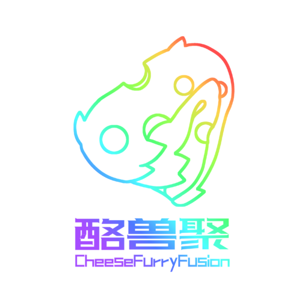

欢迎参观 PhasWer 的小站~
PhasWer 是一个由灰鸢Gledery 和 小白狼LDC 于2021年4月15日发起的用爱发电的哔哩哔哩创作者社区
现有7位成员在不断地创作（潜在的）高质量作品(〃￣︶￣)人(￣︶￣〃)
成员
啊？原来已经这么多人了吗？ φ(゜▽゜*)♪

小白狼LDC
旧名羽新LDC~
用搞笑的方式讲述那些很下饭的故事
信息密度极大，3秒一个梗是基操
建议0.5倍速食用

灰鸢Gledery
一只在数码兼泛实记区深耕的灰鸢狐狐~
以能被看见的真诚，极致的细节和深度，介绍一些有故事的东西～
偶尔（每天）玩一玩抽象
点击按钮可直接跳转至哔哩哔哩主页（如果有的话，我不道啊）
友情链接
都是很好的朋友 (￣▽￣)~*

酪兽聚
由Meta_奶酪君于2026年初冬的北京东城举办的元宇宙主题兽聚
其中灰鸢负责了周边设计和开发，以及纪录片的拍摄和编辑，完整记录了每一个环节
点击此卡片跳转至纪录片
其中灰鸢负责了周边设计和开发，以及纪录片的拍摄和编辑，完整记录了每一个环节
点击此卡片跳转至纪录片
Dinxm Robinson
知名治愈系与 Color Bass 独立音乐人~ 全网播放8000万+
代表作包括《鲸》《深海之歌》《China·孤舟》《抑郁症》等
目前已经合作制作了《深海之诗》《另一风的记忆》《他的祈愿》等，还很善良地同意交换了版权 (Ｔ▽Ｔ)
点击此卡片跳转至哔哩哔哩主页
代表作包括《鲸》《深海之歌》《China·孤舟》《抑郁症》等
目前已经合作制作了《深海之诗》《另一风的记忆》《他的祈愿》等，还很善良地同意交换了版权 (Ｔ▽Ｔ)
点击此卡片跳转至哔哩哔哩主页
捉月星社
捉月星社是由航空爱好者与心理学探索者共同组成的独特社群。目前已汇聚 500 余名活跃成员，提供公益文化项目与衍生技术服务
点击此卡片跳转至官网
点击此卡片跳转至官网
代表作
*桌面端可通过上下或左右鼠标滚轮操控
视频按照发布时间排序【请注意这不是作B站品集】
视频按照发布时间排序【请注意这不是作B站品集】
Frostart 新标签页
这其实是我第一次写这种工具性的项目，所以肯定有各种问题，慢慢改吧OwO（最实用的一集！）
是鸢做的另一款可高度自定义的本地毛玻璃浏览器首页插件~目前仍在测试
全站使用的都是用原生 HTML、CSS 和 JavaScript 编写的，没有引入任何框架，支持所有Chromium内核的浏览器
这个项目没有任何盈利属性，同时也是在GitHub上开源的，欢迎大家来 Fork 与二创（受 GPL-3.0 协议保护，详见 LICENSE）
如果你有任何问题或建议，欢迎在 GitHub 仓库里提交 Issue 或者直接找我B站都行
（顺带说一句，鸢非常不会用GitHub，所以仓库可能看起来会有些简陋，不过大家有Issues我肯定会第一时间回复的！
全站使用的都是用原生 HTML、CSS 和 JavaScript 编写的，没有引入任何框架，支持所有Chromium内核的浏览器
这个项目没有任何盈利属性，同时也是在GitHub上开源的，欢迎大家来 Fork 与二创（受 GPL-3.0 协议保护，详见 LICENSE）
如果你有任何问题或建议，欢迎在 GitHub 仓库里提交 Issue 或者直接找我B站都行
（顺带说一句，鸢非常不会用GitHub，所以仓库可能看起来会有些简陋，不过大家有Issues我肯定会第一时间回复的！
安装方式
网页预览：可以直接点下面的按钮，在Frostart官网里体验完整功能，但是无法作为默认首页
作为插件安装：下载源码，在 Chrome / Edge 的「扩展程序」页打开开发者模式，点「加载已解压的扩展程序」选择项目文件夹即可
小工具
一些可能用的上的纯本地小工具~
关于此网页
• 2.5.1以前的版本和Beta版本都没有进行移动端适配
• 浏览器需兼容HTML5才能运行动画和毛玻璃的边缘微模糊效果
• Don't rely on translation! It's very inaccurate as this page contains a lots of specialized and internet terms.
• 本站是开源项目，欢迎 Fork 与二创（受 GPL-3.0 协议保护，详见 LICENSE）
• 如果你看到了这里，那你真的很无聊呢 (*≧▽≦)